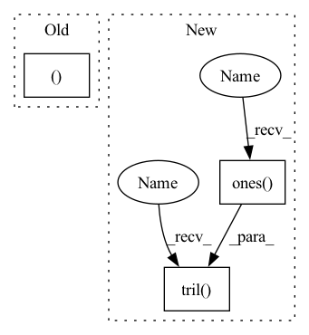

Pattern ID :21444

Before Change
bs, tz, _, _, _ = x.shape
x = x.view(bs, tz, self.channels * self.size * self.size) // bs x tz x cz * hz * wz
x_ln = self.ln_t(x)
attention_value, _ = self.spatial_attention(x_ln, x_ln, x_ln)
x = attention_value + x
// x = x.view(bs, tz, self.channels, self.size, self.size)
x = x.view(bs, tz*self.channels, self.size*self.size).permute(0, 2, 1) // bs x hz * wz x tz * cz
After Change
x = x.view(bs, tz, self.channels, self.size, self.size)
print(x.shape)
x = x.view(bs, tz, self.size*self.size, self.channels).permute(0, 2, 1, 3).view(bs*self.size*self.size, tz, self.channels) // bs x hz * wz x tz * cz
mask = torch.tril(torch.ones(tz, tz, dtype=torch.float32)) * -10000
x = self.temporal_transformer(x, mask=mask)
x = x.view(bs, self.size, self.size, tz, self.channels).permute(0, 3, 4, 1, 2)
return x
In pattern: SUPERPATTERN
Frequency: 3
Non-data size: 3
Instances
Fragment ID: 68738831
Project Name: laion-ai/phenaki
Commit Name: 37d2f60e889cf6f791559a3cfd667db1f90268ac
Time: 2022-10-03
Author: 61938694+dome272@users.noreply.github.com
File Name: vivq.py
M Class Name: TemporalSpatialAttention
N Class Name: TemporalSpatialAttention
M Method Name: forward(2)
N Method Name: forward(2)
M Parent Class: nn.Module
N Parent Class: nn.Module
M File Name: vivq.py
N File Name: vivq.py
M Start Line: 24
M End Line: 34
N Start Line: 27
N End Line: 35
'>
Before Change
for i in range(self.num_layers):
residual = his_vectors
// self-attention
query, key, value = self.Q(his_vectors), self.K(his_vectors), self.V(his_vectors)
scale = self.emb_size ** -0.5
his_vectors = components.scaled_dot_product_attention(
query, key, value, scale=scale, attn_mask=attn_mask)
// mlp forward
After Change
his_vectors = his_vectors + pos_vectors
// Self-attention
causality_mask = np.tril(np.ones((1, 1, seq_len, seq_len), dtype=np.int))
attn_mask = torch.from_numpy(causality_mask).to(self.device)
// attn_mask = valid_his.view(batch_size, 1, 1, seq_len)
for block in self.transformer_block:
his_vectors = block(his_vectors, attn_mask)
'>
Fragment ID: 68738832
Project Name: thuwangcy/rechorus
Commit Name: dba1d0bd7b6d7296ed6c730793e0f61278007dc2
Time: 2020-11-08
Author: THUwangcy@gmail.com
File Name: src/models/sequential/SASRec.py
M Class Name: SASRec
N Class Name: SASRec
M Method Name: forward(2)
N Method Name: forward(2)
M Parent Class: GRU4Rec
N Parent Class: GRU4Rec
M File Name: src/models/sequential/SASRec.py
N File Name: src/models/sequential/SASRec.py
M Start Line: 41
M End Line: 72
N Start Line: 41
N End Line: 66
'>
Before Change
zero_pad = torch.zeros(zero_pad_shape, device=x.device, dtype=x.dtype)
x_padded = torch.cat([zero_pad, x], dim=1)
x_padded_shape = (x.size(1) + 1, x.size(0)) + x.size()[2:]
x_padded = x_padded.view(*x_padded_shape)
x = x_padded[1:].view_as(x)
After Change
x_padded = x_padded.view(*x.size()[:2], k_len + 1, q_len)
x = x_padded[:,:,1:,:].view_as(x)
if zero_triu:
ones = torch.ones((q_len, k_len), device=x.device)
x = x * torch.tril(ones, k_len - q_len)[None,None,:,:]
return x
def forward(self, w, cat, r, attention_mask=None):
'>
Fragment ID: 68738833
Project Name: tongjilibo/bert4torch
Commit Name: e7a71b5780f0c193c2575f5dec687cb004c50ab2
Time: 2022-05-23
Author: tongjilibo@163.com
File Name: bert4torch/layers.py
M Class Name: RelPartialLearnableMultiHeadAttn
N Class Name: RelPartialLearnableMultiHeadAttn
M Method Name: _rel_shift(3)
N Method Name: _rel_shift(2)
M Parent Class: MultiHeadAttentionLayer
N Parent Class: MultiHeadAttentionLayer
M File Name: bert4torch/layers.py
N File Name: bert4torch/layers.py
M Start Line: 532
M End Line: 539
N Start Line: 535
N End Line: 546
'>
Before Change
// x = x.view(bs, tz, self.channels, self.size, self.size)
x = x.view(bs, tz*self.channels, self.size*self.size).permute(0, 2, 1) // bs x hz * wz x tz * cz
x = self.ln_s(x)
attention_value, _ = self.temporal_attention(x, x, x)
attention_value = attention_value + x
attention_value = self.ff_self(attention_value) + attention_value
return attention_value.permute(0, 2, 1).view(bs, tz, self.channels, self.size, self.size)
After Change
x = x.view(bs, tz, self.channels, self.size, self.size)
print(x.shape)
x = x.view(bs, tz, self.size*self.size, self.channels).permute(0, 2, 1, 3).view(bs*self.size*self.size, tz, self.channels) // bs x hz * wz x tz * cz
mask = torch.tril(torch.ones(tz, tz, dtype=torch.float32)) * -10000
x = self.temporal_transformer(x, mask=mask)
x = x.view(bs, self.size, self.size, tz, self.channels).permute(0, 3, 4, 1, 2)
return x
'>
Fragment ID: 68738836
Project Name: laion-ai/phenaki
Commit Name: 37d2f60e889cf6f791559a3cfd667db1f90268ac
Time: 2022-10-03
Author: 61938694+dome272@users.noreply.github.com
File Name: vivq.py
M Class Name: TemporalSpatialAttention
N Class Name: TemporalSpatialAttention
M Method Name: forward(2)
N Method Name: forward(2)
M Parent Class: nn.Module
N Parent Class: nn.Module
M File Name: vivq.py
N File Name: vivq.py
M Start Line: 24
M End Line: 34
N Start Line: 27
N End Line: 35